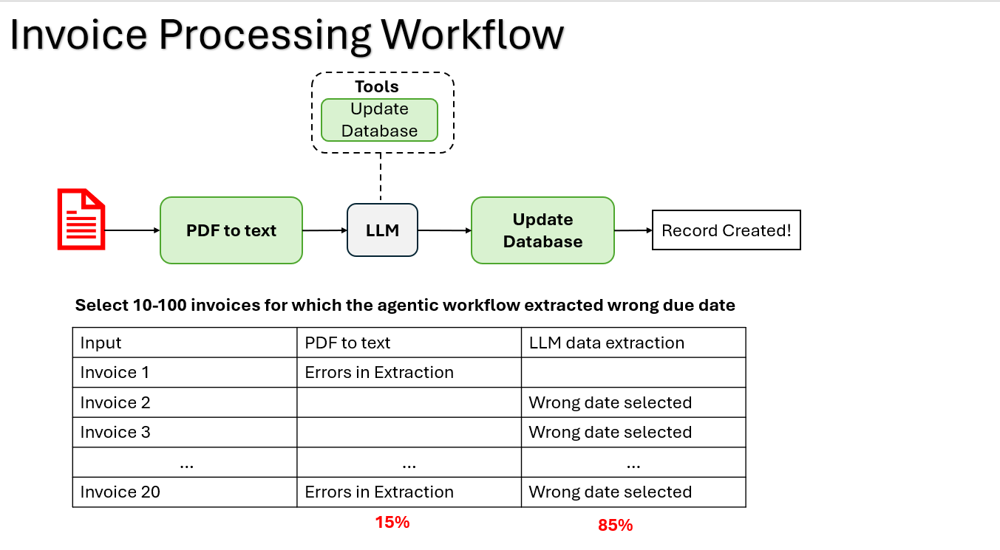

Module 4 — Episode 3
Training:Agentic AI Training
🎯 Learning Objectives
By the end of this episode, you will be able to:
- ✅ Conduct targeted error analysis across multiple components of an Agentic AI workflow
- ✅ Identify which subsystem (e.g., LLM extraction vs. data preprocessing) is responsible for observed performance issues
- ✅ Prioritize debugging and improvement efforts based on evidence from structured error review
🧭 Overview
This episode extends the practice of error analysis by walking through two detailed case studies:
1. An invoice processing workflow, and
2. A customer email response workflow.
You’ll learn how to systematically identify the root cause of errors across multiple components—such as PDF parsers, databases, and LLMs—so that your optimization efforts focus on the most impactful areas. This structured approach is critical for improving real-world Agentic AI systems efficiently.
🧱 Prerequisites
Readers should already understand:
- The concept of Agentic AI workflows and their multi-step structure
- The basics of end-to-end evaluation (covered in earlier episodes of this module)
- Familiarity with LLM-based extraction and database querying
🔑 Core Concepts
- Error Analysis – A systematic process of identifying where and why a system fails, focusing on misbehaving examples rather than successful ones.
- Component Attribution – Determining which part of a multi-step workflow (e.g., OCR, LLM, database) is responsible for observed errors.
- Targeted Improvement – Using data-driven insights from error analysis to decide which component to refine first.
🖼 Visual Explanation
 Caption:This diagram illustrates how errors propagate through a multi-step workflow from PDF parsing to LLM extraction to database recording, enabling isolation of faulty stages.
⚙️ Technical Breakdown
How It Works
1. Collect Error Cases:Gather 10–100 examples where the system produces incorrect or unsatisfactory outputs. Ignore correct cases.
2. Trace the Workflow:For each error case, follow the data flow through each component:
- Input (e.g., PDF, email)
- Intermediate outputs (e.g., parsed text, database query)
- Final output (e.g., extracted fields, drafted email)
3. Attribute the Error:Record which component caused or contributed to the error.
Example spreadsheet columns:
-Input ID
- PDF-to-Text Correct?
- LLM Extraction Correct?
- Database Query Correct?
- Final Output Quality
4. Quantify Component Impact:
Tally how often each component fails.
Note that percentages may exceed 100% since multiple components can fail in the same example.
5. Prioritize Fixes:Focus optimization efforts on the component responsible for the majority of errors.
Why It Works
Error analysis isolates the true source of performance degradation, preventing wasted effort on components that are already performing adequately.
By understanding which subsystem contributes most to overall failure, developers can:
- Improve system reliability faster
- Avoid premature optimization
- Make data-informed decisions about retraining or re-architecting components
When To Use It
✅ Ideal Scenarios- When end-to-end evaluations show underperformance but lack diagnostic detail
- During iterative development of multi-component AI pipelines
- Before investing in retraining or model tuning
- Applying error analysis on too few examples (leads to misleading conclusions)
- Ignoring contextual dependencies between components
- Focusing only on aggregate metrics without qualitative inspection
Trade-offs & Limitations
- Manual Effort: Requires human inspection and labeling of error samples
- Non-mutual Errors: Multiple components may fail simultaneously, complicating attribution
- Sampling Bias: If error cases are not representative, conclusions may mislead optimization priorities
Performance Considerations
- Efficiency: Analyzing only incorrect samples reduces evaluation time
- Scalability: Use structured spreadsheets or lightweight dashboards for large datasets
- Automation Potential: Once patterns are known, automated detectors can identify similar errors in production
💻 Code Examples
Minimal Example: Error Attribution for Invoice Extraction
import pandas as pd
# Example error log for invoice processing
data = [
{"invoice_id": 1, "pdf_to_text_ok": False, "llm_extraction_ok": True},
{"invoice_id": 2, "pdf_to_text_ok": True, "llm_extraction_ok": False},
{"invoice_id": 3, "pdf_to_text_ok": True, "llm_extraction_ok": False},
]
df = pd.DataFrame(data)
# Aggregate error rates
error_summary = {
"pdf_to_text_error_rate": 1 - df["pdf_to_text_ok"].mean(),
"llm_extraction_error_rate": 1 - df["llm_extraction_ok"].mean(),
}
print(error_summary)
{'pdf_to_text_error_rate': 0.33, 'llm_extraction_error_rate': 0.67}
This simple analysis reveals that the LLM extraction step contributes to most of the observed errors—guiding where to focus improvement efforts.
🧩 Real-World Example: Customer Email Workflow
| Email ID | Query Generation | Database Integrity | Email Draft Quality | Root Cause |
|---|---|---|---|---|
| 1 | ❌ Wrong table | ✅ Correct | ❌ Poor phrasing | Query logic |
| 2 | ✅ Correct | ❌ Corrupted data | ✅ Acceptable | Database |
| 3 | ✅ Correct | ✅ Correct | ❌ Tone mismatch | LLM output |
If 75% of total errors trace back to query generation, prioritize refining the LLM’s query-writing prompt before addressing smaller issues like email phrasing.
🚀 Key Takeaways
- Always analyze incorrect outputs, not the successful ones.
- Attribute failures to specific components to avoid wasted optimization.
- Use structured tracking (e.g., spreadsheets, scripts) to quantify component-level error rates.
- Let error analysis guide where to focus next in improving Agentic AI workflows.
🔗 Next Episode
Continue to Episode 4: Component-Level Evaluations, where we’ll learn how to formally evaluate and benchmark individual components identified through error analysis.